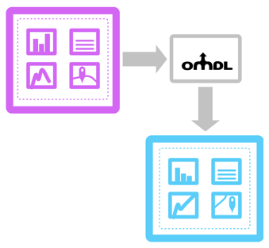

Open Mashup Description Language: A Strategic Overview
Why should you care about OMDL when procuring software platforms?
Mashups provide a powerful way of combining Web functionality to meet particular use cases. But to date it has been difficult to move mashups between platforms. The Omelette project has developed OMDL as a simple way to export mashups consisting of pages, layouts and widgets for use in other applications. For example, OMDL can be used to export a profile page or a workspace from a portal or social network and import it into another.
OMDL provides users with a way to share widget-based page layouts, such as dashboards, so that they can be readily imported and reused elsewhere. OMDL provides a way for users to create mashup "templates" that can be shared with other users and across platforms. This means that users can create mashups using one platform, but export it to another, reducing vendor lock-in to a particular platform. For example, if you switched intranet from one portal platform to another, OMDL can be used to migrate dashboards and mashups created by your users.
For users, OMDL also provides the ability to share and reuse mashup configurations. This makes it easier to work across departments that use different platforms, for example, or for organisations to share useful mashup configurations with their customers and partners. This is useful for organisations that have multiple platforms, or where there are multiple servers running portals.
How does it work?
OMDL provides a way for users to create mashup "templates" that can be shared with other users and across instances and platforms, describing the structure of a page that includes widgets. Widgets can be the W3C Packaged Web Apps, or OpenSocial Gadgets, or any other kind of widget supported by platforms. Where a specific widget format isn't supported, platforms can default to a native widget that performs a similar function.

What platforms are supported?
The specification has been developed in the context of Apache Rave, an engine for internet and intranet portals. This was also the first platform to implement the specification. There has been a lot of discussion about the role of mashups in supporting Personal Learning Environments, and offering an alternative to traditional VLE functionality. With this in mind it was appropriate to explore the potential of this technology in education. Accordingly OMDL has been implemented in Moodle.
Both these implementations have been designed so that the code can be reused easily in other platforms built using the same language. Apache Rave is built using Java, and Moodle uses PHP.
Further information
If you are interested in learning more about this work, you can join the Google group dedicated to the specification on the community page, and ask any questions that you like. You will also find details about the Omelette project outputs at www.ict-omelette.eu
The most relevant are: